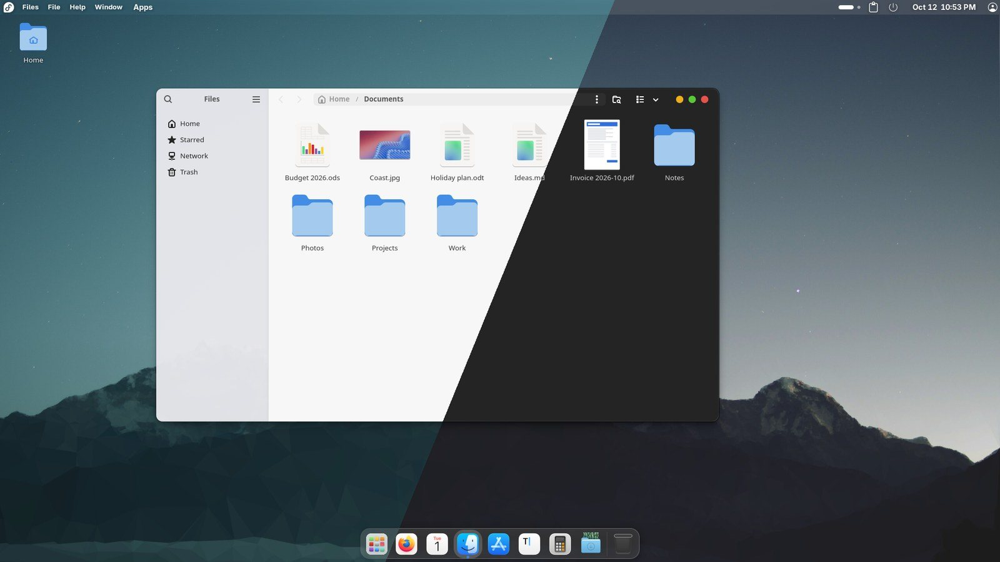
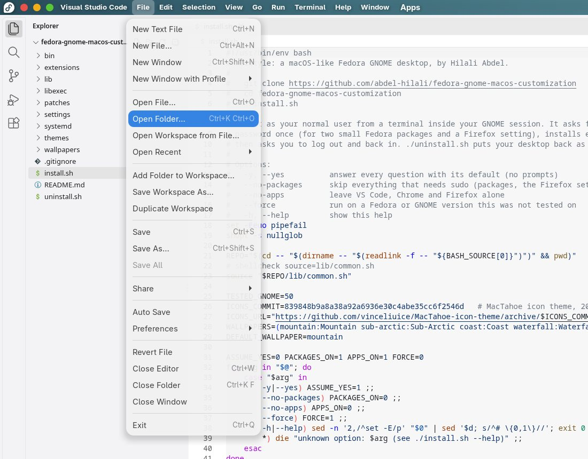
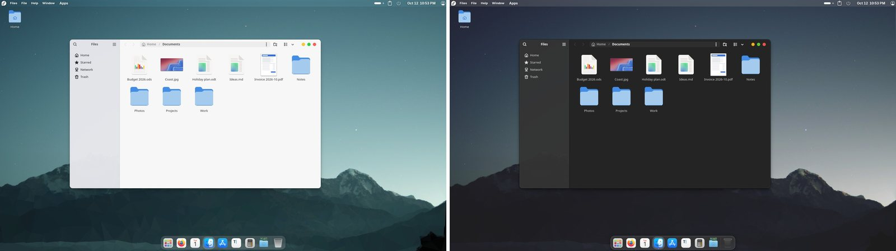
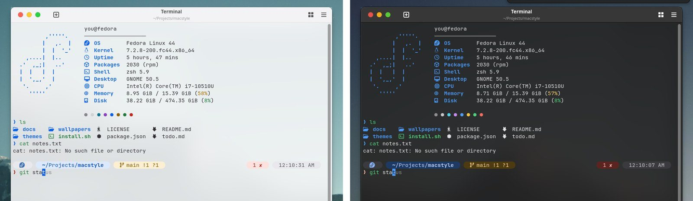
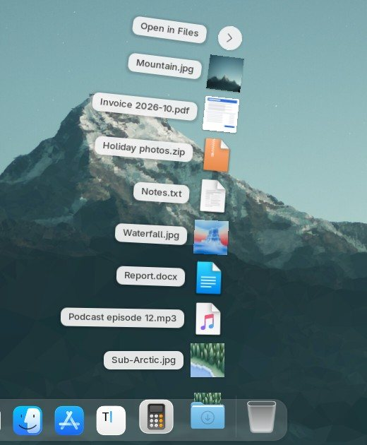
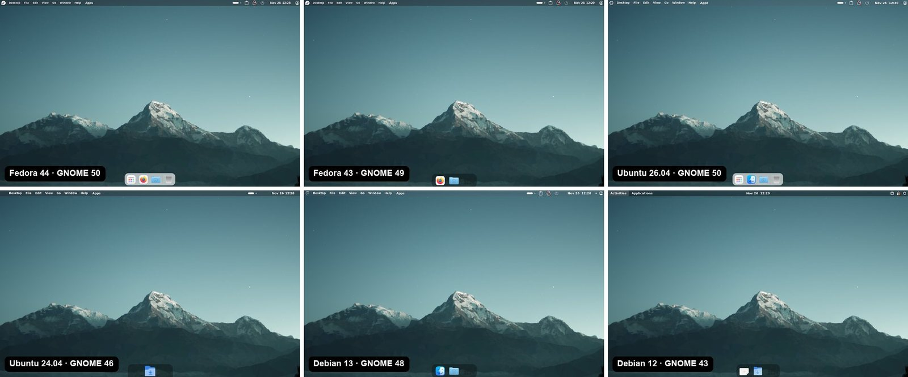

macstyle
A macOS-like desktop for Fedora, Ubuntu, Debian and Windows, in one command, and back again in one command

Overview
The parts of macOS that make daily work easier, on a Linux or Windows computer: a dock that magnifies, the app's menus in the top bar, window buttons on the left, Quick Look, and a Dark Style that switches everything at once, wallpaper included.
On Linux it sets up GNOME with up to 19 extensions, the WhiteSur theme and MacTahoe icons, day-and-night wallpapers and a terminal with a round-pill prompt. It works on any GNOME from 43 to 51, which covers Fedora 42 to 45, Ubuntu 24.04 to 26.10 and Debian 12 and 13. On Windows 10 and 11 it installs free, open-source tools for a dock and a top bar, Quick Look, a Spotlight-like search and automatic dark mode, with the macOS cursor, matching fonts and the same terminal look.
Before changing anything it saves your settings and every file it replaces, and one command puts it all back. The source code is on GitHub at TYFSADIK/macstyle, under the GNU General Public License 3.0.
What You Get
| Feature | Linux (GNOME) | Windows |
|---|---|---|
| Dock | Magnifies under the pointer, steps aside for windows (Dash2Dock Motion or Lite) | Seelen UI's dock |
| Top bar | The app's own menus (File, Edit, View) for VS Code, Chrome, Firefox, LibreOffice; window buttons there when maximized | Seelen UI's top bar |
| Window buttons | On the left | Not possible on Windows |
| Dark Style | Apps, top bar, dock, icons, shadows, terminal and a day or night wallpaper switch together | Auto Dark Mode on a schedule, wallpapers that follow it |
| Quick Look and search | Space on a file in Files (Sushi); GNOME search | QuickLook; Alt+Space search (PowerToys) |
| Look | WhiteSur theme (a softer light variant), MacTahoe icons and cursor, rounded corners, blur | macOS cursor, Inter font, blue accent |
| Terminal | zsh with round pills, suggestions, z jumps, ls with icons; Ptyxis or GNOME Terminal styled | Windows Terminal and PowerShell with the same pills (Starship) |
| Also | Downloads fan from the dock, cover-flow Alt+Tab, magic lamp, clipboard history, Caffeine, a matching second top bar | Centred taskbar icons |




How It Works
One installer for every GNOME version. A GNOME extension declares the versions it runs on, and one made for another version can stop GNOME Shell from starting. For each extension the install uses the copy in the repository if it declares your version; otherwise it downloads the release made for it from extensions.gnome.org, or from the project's own GitHub releases where those are newer, and switches it on only if its metadata lists your version. Nothing made for another version is ever switched on.
Distribution by distribution. Packages come from dnf on Fedora and apt on Debian and Ubuntu, with their different names. Tools a release does not package (fastfetch and lsd on Debian 12 and Ubuntu 24.04) are downloaded from their projects. On GNOME 47 and older the WhiteSur top-bar theme is built for that exact version. Ubuntu Dock is switched off, Debian 13 gets Ptyxis because its Console cannot be styled, and Ubuntu 24.04's GNOME Terminal gets the same colours, switching with Dark Style.
Reversible. The first run saves the full settings database and every file it replaces. Uninstall removes what was added, brings back what was replaced and restores every setting it touched.
Install
Linux, in a terminal inside your GNOME desktop, then log out and back in:
git clone https://github.com/TYFSADIK/macstyle
cd macstyle
./install.shWindows, in PowerShell in the downloaded folder (not as administrator), then sign out and back in:
powershell -ExecutionPolicy Bypass -File .\windows\install.ps1Undo with ./uninstall.sh or .\windows\uninstall.ps1.
Testing
Every push runs the install on six Linux versions in containers and on Windows Server 2025. On Linux the test then starts GNOME Shell without a screen and asks it, extension by extension, whether each one is running; takes a screenshot; uninstalls; and compares every setting with the state before the install. On Windows it checks the fonts, cursor, wallpaper, dark-mode watcher, PowerShell profiles, prompt and Windows Terminal profile, uninstalls and compares the registry.
| System | GNOME | Extensions running | Dock | After uninstall |
|---|---|---|---|---|
| Fedora 44 | 50 | 19 of 19 | Dash2Dock Motion | settings identical |
| Fedora 43 | 49 | 18 of 18 | Dash2Dock Lite | settings identical |
| Ubuntu 26.04 | 50 | 18 of 18 | Dash2Dock Motion | settings identical |
| Ubuntu 24.04 | 46 | 17 of 17 | Dash2Dock Lite | settings identical |
| Debian 13 | 48 | 17 of 17 | Dash2Dock Lite | settings identical |
| Debian 12 | 43 | 12 of 12 | Dash2Dock Lite | settings identical |
| Windows Server 2025 | Seelen UI | registry identical |

What Testing Found
The first runs failed everywhere. Each failure was either a real bug, fixed, or a gap in the test setup:
- Every package looked unavailable on Debian and Ubuntu. The installer runs with pipefail, and
apt-cache policy | grep -qfails when grep closes the pipe early. Capturing the output first fixed it. - The theme did not build on GNOME 47 and older. WhiteSur's installer hides the cursor with
setterm, which fails without a terminal and silently stops the build. It now runs with a setterm that does nothing, and every theme variant it makes is recorded so uninstall removes them all. - Desktop icons could never start on Ubuntu 24.04 and Debian. Python's zip extraction dropped the executable bit from the downloaded extension's launcher. Permissions are now restored from the zip, and checked.
- GTK 4 apps had no theme on Debian 13 and Ubuntu 24.04. GTK before 4.20 rejects the CSS media queries that switch light and dark. Those systems get one marked import that the Dark Style service rewrites.
- The Apps Menu crashed on Ubuntu without the
gnome-menuspackage, which Fedora pulls in and Debian and Ubuntu do not. - Testing GNOME Shell in a container needed what a login provides: an X11 socket folder, a system bus, and a stand-in login manager (python-dbusmock, as GNOME's own tests use).
Limits
- Tested without a screen. The tests prove every extension runs and every setting is undone; a live login on real hardware (the dock under a real pointer, menus of open apps) is the next test.
- Top-bar menus need GNOME 45 or newer, and apps that publish their menus. Debian 12 gets the Applications menu instead.
- Windows cannot move window buttons or put an app's menus in the top bar; macstyle does not pretend to.
- The SF Pro font is not included because of Apple's licence; Inter is used on Windows, and SF Pro on Linux if you have it.
What Is Next
- A test on real hardware with a live login, on each distribution.
- Top-bar menus for Flatpak and Qt apps.
- Screenshots of the Windows edition from a real desktop.
Cite This Page
Citation formats
Plain text
Taki Sadik, "macstyle", TYFSADIK, https://tyfsadik.org/work/applications/macstyle (accessed 2026-11-26).BibTeX
@misc{sadik-macstyle,
author = {Sadik, MD. Taki Yasir Faraji},
title = {macstyle},
year = {2026},
url = {https://tyfsadik.org/work/applications/macstyle},
urldate = {2026-11-26}
}APA
Sadik, M. T. Y. F. (2026). macstyle. TYFSADIK. https://tyfsadik.org/work/applications/macstyle